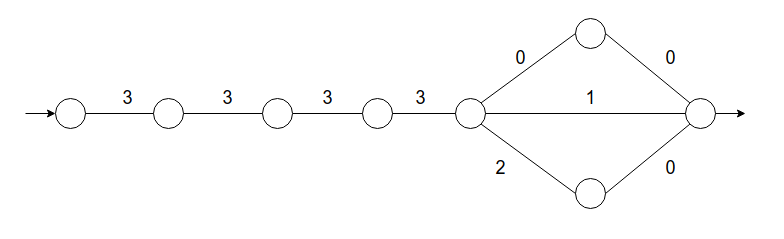
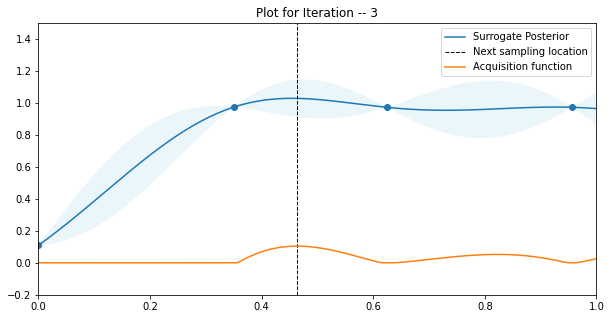

Each edge in the graph is associated with a binary cost and let's assume that the agent does not know about these costs beforehand, but knows about the topology of the graph. Each time an agent moves from one node to another, it observes and accumulates the cost. An episode is going from the source on the left to the sink on the right. Hence, the learning task is to figure out the optimal path in a few episodes. The simplest solution for the agent is to assume that the costs of edges are uniform and thus, take the shortest path through the middle, which gives it a total cost of 13. We could then use a standard regression algorithm to fit a weight vector to this dataset and estimate the cost of the other paths, simply based on the nodes observed so far, which gives us 14 for the top, 13 for the middle, and 14 for the bottom paths. Hence, the agent would choose to take the middle path, even though it is suboptimal as compared to the top one. Now, let's consider an agent that does not just fit a weight vector but reasons about whether it can obtain the cost of edges with the available data. Assuming the agent completed the first episode through the middle path and accumulated a reward of 13, the question it needs to answer is which path to go for next. In the bottom path cost of the penultimate node is 2, which can be figured out from the costs of nodes already visiteddef create_resnet9_model() -> nn.Module:
'''
Function to customize the RESNET to 9 layers and 10 classes
Returns
--------
torch.module
Pytorch Module of the Model
'''
model = ResNet(BasicBlock, [1, 1, 1, 1], num_classes=10)
model.conv1 = torch.nn.Conv2d(1, 64, kernel_size=(7, 7), stride=(2, 2), padding=(3, 3), bias=False)
return model
#
class ResNet9(pl.LightningModule):
def __init__(self, learning_rate=0.005):
'''
Pytorch Lightning Module for training the RESNET with SGD optimizer
Parameters
-----------
learning_rate: float
Learning rate to be used for training every time since it is an
optimization parameter
'''
super().__init__()
self.model = create_resnet9_model()
self.loss = nn.CrossEntropyLoss()
self.learning_rate = learning_rate
@auto_move_data
def forward(self, x):
return self.model(x)
def training_step(self, batch, batch_no):
x, y = batch
loss = self.loss(self(x), y)
return loss
def configure_optimizers(self):
return torch.optim.SGD(self.parameters(), lr=self.learning_rate)
def objective( lr=0.1,
epochs=1,
gpu_count=1,
iteration=None,
model_dir='./outputs/models/',
train_dl=None,
test_dl = None
):
'''
The objective function for the optimization procedure
Parameters
-----------
lr: float
learning Rate
epochs: int
Epochs for training
gpu_count: int
Number of GPUs to be used (0 for only CPUs)
iteration: int
Current iteration
model_dir: str
directory to save model checkpoints
train_dl: Torch Dataloader
Dataloader for training
test_dl: Torch Dataloader
Dataloader for inference
Returns
---------
float
balanced Accuracy of the model after inference
'''
save = False
checkpoint = "current_model.pt"
model = ResNet9(learning_rate=lr)
trainer = pl.Trainer(
gpus=gpu_count,
max_epochs=epochs,
progress_bar_refresh_rate=20
)
trainer.fit(model, train_dl)
trainer.save_checkpoint(checkpoint)
inference_model = ResNet9.load_from_checkpoint(
checkpoint, map_location="cuda")
true_y, pred_y, prob_y = [], [], []
for batch in tqdm(iter(test_dl), total=len(test_dl)):
x, y = batch
true_y.extend(y)
model.freeze()
probabilities = torch.softmax(inference_model(x), dim=1)
predicted_class = torch.argmax(probabilities, dim=1)
pred_y.extend(predicted_class.cpu())
prob_y.extend(probabilities.cpu().numpy())
if save is False:
os.remove(checkpoint)
return np.mean(balanced_accuracy_score(true_y, pred_y))
# Create the Model
m52 = sklearn.gaussian_process.kernelsConstantKernel(1.0) * Matern( length_scale=2.0,
nu=1.5
)
model = sklearn.gaussian_process.GaussianProcessRegressor(
kernel=m52,
alpha=1e-10,
n_restarts_optimizer=100
)
def _acquisition(self, X, samples):
'''
Acquisition function using hte Expected Improvement method
Parameters
-----------
X : N x 1
Array of parameter points observed so far
X_samples : N x 1
Array of Sampled points between the bounds
Returns
--------
float
Expected improvement
'''
# calculate the max of surrogate values from history
mu_x_, _ = self.surrogate(X)
max_x_ = max(mu_x_)
# Get the mean and deviation of the samples
mu_sample_, std_sample_ = self.surrogate(samples)
mu_sample_ = mu_sample_[:, 0]
# Get the improvement
with np.errstate(divide='warn'):
z = (mu_sample_ - max_x_ - self.eps) / std_sample_
EI_ = (mu_sample_ - max_x_ - self.eps) * \
scipy.stats.norm.cdf(z) + std_sample_ * scipy.stats.norm.pdf(z)
EI_[std_sample_ == 0.0] = 0
return EI_
self.surrogate() function is just predicting using the Gaussian process earlier written. Once we have our expected improvements, we need to optimize our acquisition by maximizing over these expected improvements
def optimize_acq(self, X):
'''
Optimization of the Acquisition function using a maximization check of the outputs
Parameters
-----------
X : N x 1
Array of parameter points
Returns
--------
float
Next location of the sampling point based on the Maximization
'''
# Calculate Acquisition value for each sample
EI_ = self._acquisition(X, self.X_samples_)
# Get the index of the largest Score
max_index_ = np.argmax(EI_)
return self.X_samples_[max_index_, 0]
budget = 10
train_data = KMNIST("kmnist", train=True, download=True, transform=ToTensor())
test_data = KMNIST("kmnist", train=False, download=True, transform=ToTensor())
train_dl = DataLoader(train_data, batch_size=batch_size, shuffle=True, num_workers=8 )
test_dl = DataLoader(test_data, batch_size=batch_size, num_workers=8)
# sample the domain
X = np.array([np.random.uniform(0, 1) for _ in range(init_samples)])
y = np.array([objective(lr =x,
epochs=init_epochs,
gpu_count=gpu_count,
train_dl=train_dl,
test_dl=test_dl
) for x in X])
X = X.reshape(len(X), 1)
y = y.reshape(len(y), 1)
for i in range(budget):
# fit the model
B.model.fit(X, y)
# Select the next point to sample
X_next = B.optimize_acq(X, y)
# Sample the point from Objective
Y_next = objective( lr=X_next,
epochs=epochs,
gpu_count=gpu_count,
model_dir= output_dir+"/models/",
iteration=i+1,
train_dl= train_dl,
test_dl = test_dl
)
print(f"LR = {X_next} \t Balanced Accuracy = {Y_next*100} %")
# Plots for second iteration onwards
B.plot(X, y, X_next, i+1)
# add the data to History
X = np.vstack((X, [[X_next]]))
y = np.vstack((y, [[Y_next]]))

The vertical axis is the Balanced Accuracy and the horizontal axis is the learning rate. As can be seen, this is the third iteration of the main loop, with 2 points sampled as an initial estimate, and the acquisition function is the highest at the region with the balance of uncertainty and value of the mean.